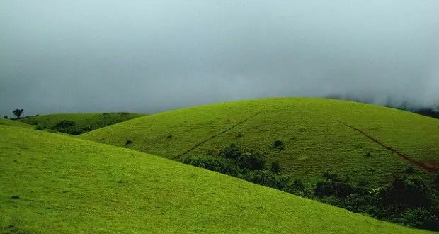
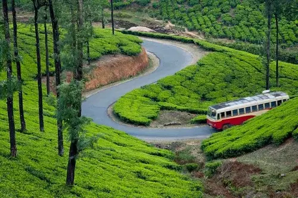

Alluring Hill Station, Vagamon
Vagamon, known as Switzerland of Kerala, located near Peerumedu in Idukki district at above 1100 meters from the waves of the sea.
Captivating climate
Vagamon has a very cool climate and this makes it an all-season destination for tourists from around the world.
Nature's beauty at its best
The lush green hills, pine forest, waterfalls, and tiny meadows make this place an amazing gift of nature. The river Meenachil, which flows through the town adds an extra beauty to this hill station.
Scenic routes to Vagamon
The trip to Vagamon itself is an amazing experience. The road that leads to Vagamon is cut in solid rock lined up with pine forests.
Harmony at Vagamon
The three famous hills: Thangal, Murugan, and Kurisumala hills give an enchanting feel to this beautiful hill station. These are important to Hindus, Muslims, and Christians respectively, which clearly showcase the communal harmony in this place. The peaceful surrounding Vagamon provides make it an ideal place for meditation too.
Adventure destination touching the clouds
Nature's beauty is not the only thing that Vagamon offers. It is an all-time favorite picnic spot for people who loves adventures as well. You can find various adventure activities like trekking, paragliding, rock climbing, and mountaineering.
A very special place
Vagamon is one of its kind of place which you cannot find anywhere else in the world. Its cool climate, windy breeze, green hills, velvety meadows takes the breath away from people.